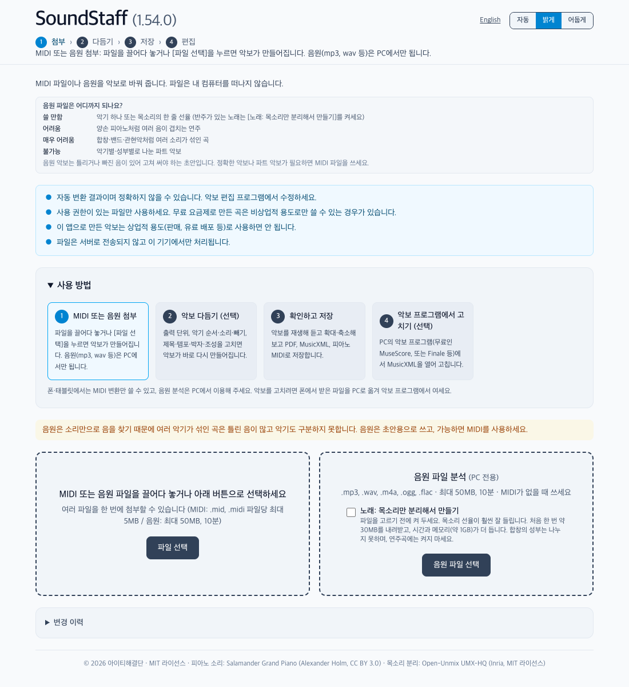
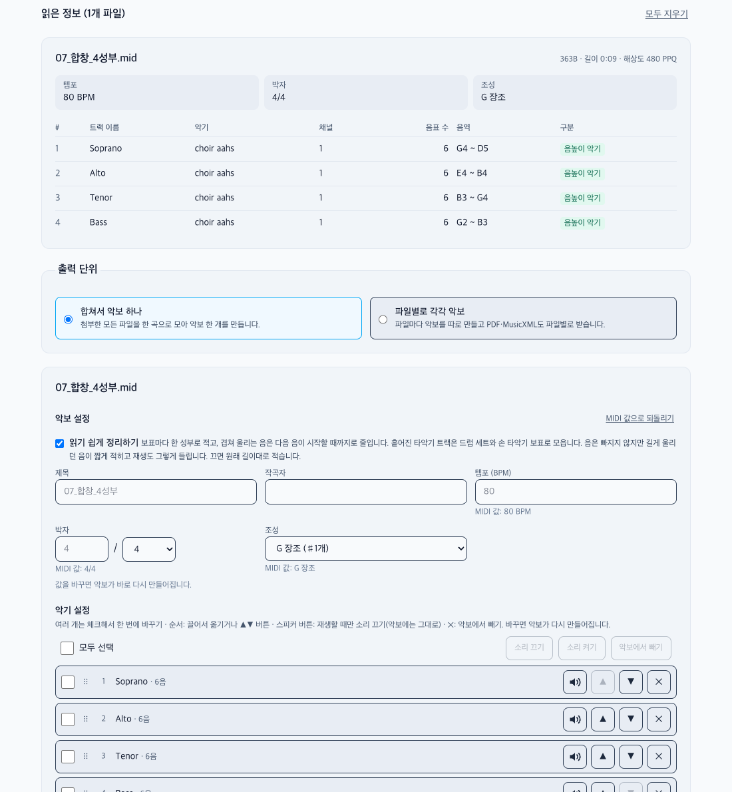

SoundStaff – Turn MIDI and Audio into Sheet Music
A free web app that turns MIDI files or audio into sheet music (PDF) and MusicXML.
Opens in a new window. No installation or sign-up needed. The app itself is in Korean only.
What is this app?
Drop in a MIDI file and it turns it into sheet music right away. It splits the score by instrument, lets you change the time signature, key, and tempo, and plays the score back so you can listen to it. You can save the result as a PDF or as MusicXML (a standard file format that music notation programs use to exchange scores), then open it in a notation program such as Finale to edit it.
On a PC you can also upload audio (mp3, wav, and so on). It finds the notes in the sound and makes a rough draft of the score. Please read "How accurate is audio analysis?" below.
- Your files are never sent to a server. They are processed only inside your own computer (the browser).
- It is free and has no ads, and the source code is open under the MIT License.
How to use it
The screenshots below show the app's Korean interface.
1. Add a file
Drag a MIDI file (.mid, .midi) onto the page or press the file button. Audio analysis is on the right-hand card and is available on a PC only.

2. Adjust the score (optional)
You will see the tempo, time signature, and key it read from the piece. You can enter a title and composer, reorder the instruments, mute them, or remove them from the score. The score is rebuilt as soon as you change something.

3. Check and save
Play the score to hear it, zoom in and out to check it, and then save it as a PDF, MusicXML, or piano MIDI.

4. Open it in Finale
On a PC, open the saved MusicXML file in Finale, then save it under a new name to get a Finale file (.musx). Finale only runs on a PC, so if you downloaded the file on a phone, move it to a PC first.
How accurate is audio analysis?
A MIDI file already contains the notes, so it is easy to turn into a score. Audio has to be analyzed from the sound alone, so results vary a lot from piece to piece. The tendencies below come from test pieces we made ourselves; they are rough trends, not exact figures, and real recordings can score lower.
- Works well: a single melody line played on one instrument, such as a piano (including a vocal-only stem).
- Fair: pieces where several notes overlap, such as two-hand piano or choir. Some notes will be missed and a few extra notes will appear.
- Draft only: pieces with several instruments mixed together. Many notes will be wrong, so switch to melody only or use MIDI.
Who is it for?
- People who made a piece in MIDI and want to turn it into a score to edit in Finale
- People who want a draft score of a melody played on a single instrument in a recording
- People who do not want to upload their files to an outside server
Things to know
- Automatic conversion results may not be accurate. Please check and correct them in a notation program.
- Use only files you have the right to use. Songs made on a free plan may be limited to non-commercial use.
- On phones and tablets only MIDI conversion works; please use a PC for audio analysis.
- Audio analysis cannot tell instruments apart.